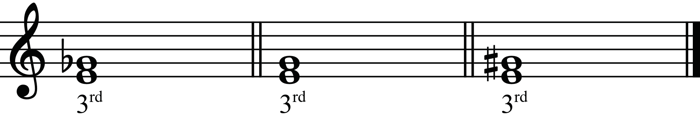
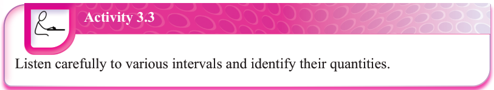
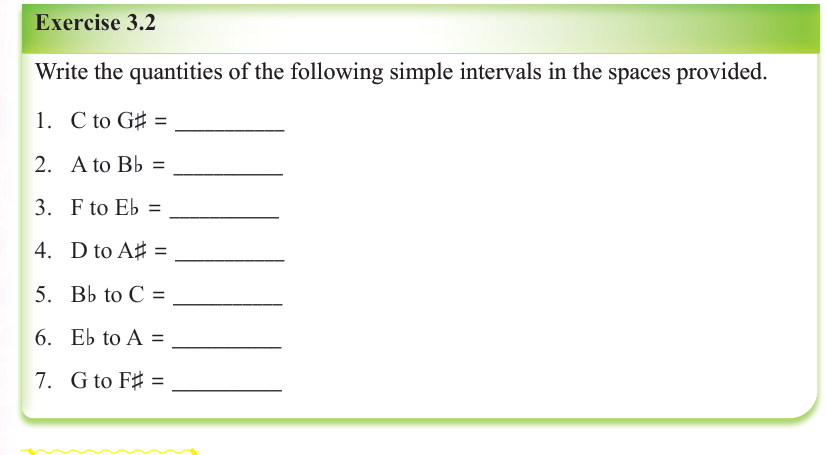

Figure 3.11: Different intervals with the same quantity of thirds

Activity 3.3
Listen carefully to various intervals and identify their quantities.

Exercise 3.2
Write the quantities of the following simple intervals in the spaces provided.
Tonic triads
In music, a tonic triad is built on the first note of a scale which is also called the tonic note.
It is one of the most important triads in any key because it gives the music a sense of home or rest.
A tonic triad is like the musical “home base” that other triads move away from and return to.
Whether in major or minor keys, the tonic triad helps listeners feel where the music begins and ends.
Composers often begin and end musical pieces with the tonic triad to create a feeling of completeness.